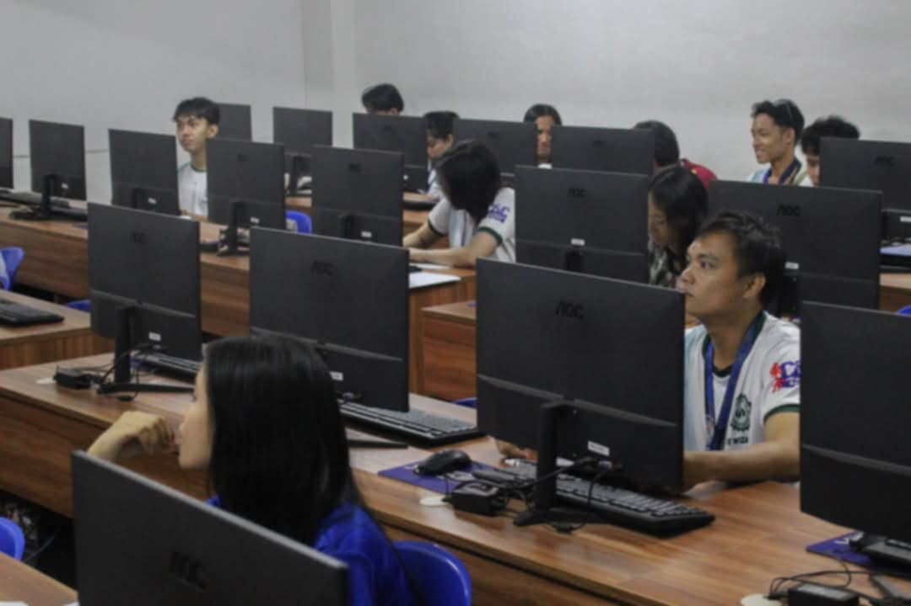
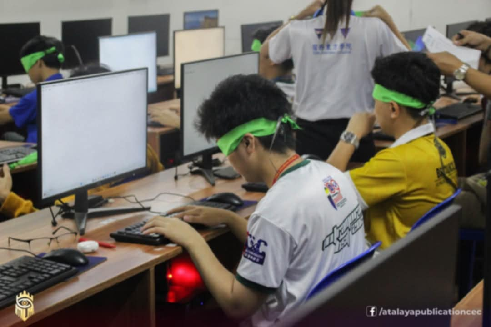
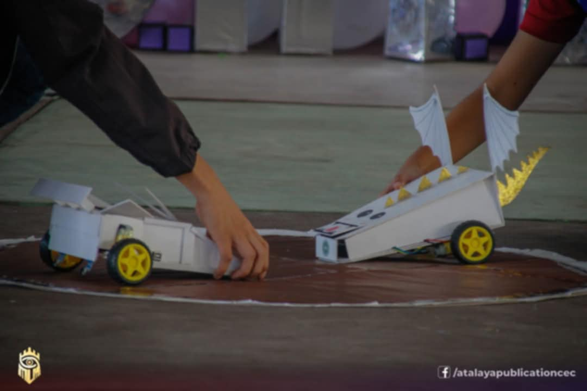

School Blog
Are you an incoming BSIT student feeling excited yet a little overwhelmed? This blog is designed just for you! We'll cover everything from navigating your first semester to mastering coding languages and landing your dream internship. Get ready to explore practical tips, helpful resources, and advice from current students and industry professionals. We'll demystify the BSIT program, helping you feel confident and prepared to embark on this rewarding academic journey. Let's start your BSIT adventure together!
Future BSIT students: This is a typical scene from our annual programming contest. The photograph depicts students immersed in a high-stakes competition, showcasing the collaborative and problem-solving skills crucial to success in the field. Expect to participate in similar events, developing your coding abilities and teamwork within a challenging yet supportive environment. These competitions are not just tests of skill; they're valuable learning experiences that mirror real-world IT projects and prepare you for future career challenges.
The photograph captures a unique and challenging aspect of a BSIT programming competition: a blindfolded coding challenge. Students, their eyes covered by blindfolds, are intently focused on their keyboards, their fingers flying across the keys. The image highlights not only the technical skills required of BSIT students but also their ability to rely on memory, problem-solving skills, and a deep understanding of programming logic. The quiet concentration of the participants, combined with the unusual circumstances of the competition, creates a compelling visual narrative of dedication, precision, and the intense pressure of a high-stakes event. The scene suggests a competition designed to push students beyond their comfort zones, fostering adaptability and resourcefulness—essential traits for success in the dynamic field of information technology. The blank computer screens hint at the complexity of the programming tasks, while the supportive presence of proctors suggests a carefully controlled and supervised learning environment. The overall image powerfully conveys the rigorous training and competitive spirit fostered within the BSIT program.
The photograph documents a robotics competition showcasing student-designed and constructed robots. Two competitors are depicted actively manipulating their respective autonomous vehicles within a defined contest arena. The robots, exhibiting unique designs—one resembling a car, the other a stylized dragon—suggest a focus on both functionality and creative engineering. The image highlights the practical application of mechatronics and programming principles, emphasizing the hands-on skills development inherent in such competitions. The controlled environment and focused actions of the participants underscore the precision and strategic thinking required for success in robotics engineering. The overall composition provides a clear visual representation of a high-level educational activity that fosters innovation, problem-solving, and collaborative teamwork.